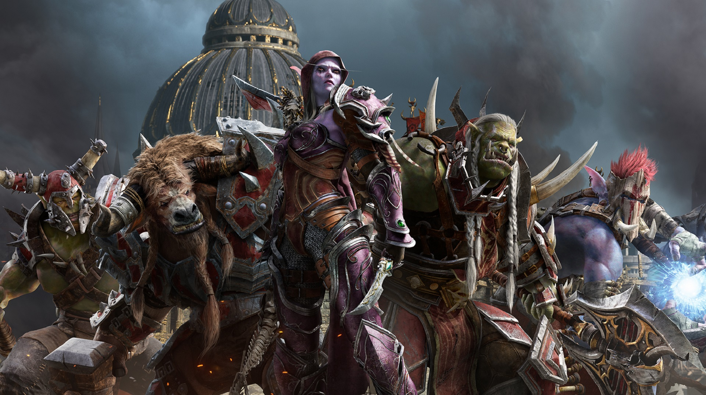

A multiplayer game is a game of several players who may be independent opponentsor teams. Games with many independent players are difficult to analyze formallyusing game theory as the players may form and switch coalitions. The term "game"in this context may mean either a true game played for entertainment, or acompetitive activity describable in principle by mathematical game theory.
Most games require multiple players. However, single-player games are uniquein respect to the type of challenges a player faces. Unlike a game with multipleplayers competing with or against each other to reach the game's goal, a one-playergame is a battle solely against an element of the environment (an artificial opponent),against one's own skills, against time, or against chance. Playing with a yo-yo orplaying tennis against a wall is not generally recognized as playing a game due tothe lack of any formidable opposition. Many games described as "single-player" maybe termed actually puzzles or recreations.
John Nash proved that games with several players have a stable solution providedthat coalitions between players are disallowed. Nash won the Nobel prize foreconomics for this important result which extended von Neumann's theory of zero-sumgames. Nash's stable solution is known as the Nash equilibrium.If cooperation between players is allowed, then the game becomes more complex;many concepts have been developed to analyze such games. While these have hadsome partial success in the fields of economics, politics and conflict, no goodgeneral theory has yet been developed.In quantum game theory, it has been found that the introduction of quantuminformation into multiplayer games allows a new type of equilibrium strategynot found in traditional games. The entanglement of players's choices can havethe effect of a contract by preventing players from profiting from what is knownas betrayal.